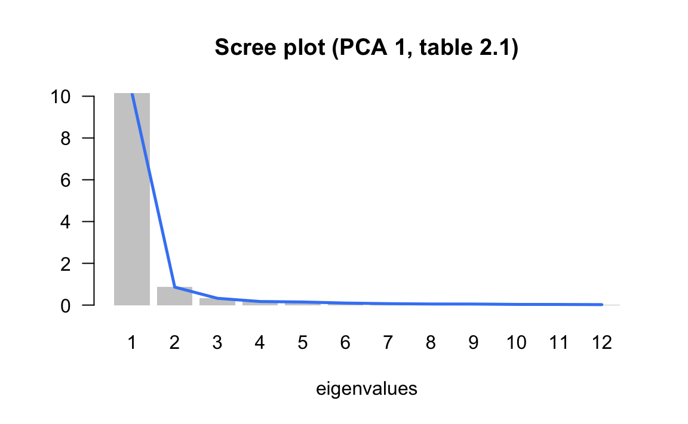

3.3 Validation: stability and significance
What is the part in PCA results that is not really accounted by the structure of the data, but by the randomness in the data? Are the results stables and reproducibles? Do the configuration of points change based on the studied data? All of these questions make it necessary to assess the stability of the obtained results.
The stability of the results will depend on the randomness of the data collection process (e.g. random samples, sampling surveys), as well as on the measurement errors in the variables.
3.3.1 How many axes to study and retain?
Are the directions of the first axes well defined and stable? More precisely, are the dispersions in consecutive directions really different? If not, we would have to consider that the factorial plane formed by them is stable but the associated axes are not really different (i.e. indeterminate by a rotation).
One way to answer these questions is to suppose that the data come from a sample drawn from a population with a normal distribution. In this case, the eigenvalues asymptotically follow a normal distribution (Anderson, 1963). Then, we can estimate a 95% confidence interval for each eigenvalue with the formula (3.1)
\[ \left [ \lambda_{\alpha} \left (1 - 1.96 \sqrt{2/(n-1)} \right ); \hspace{1mm} \lambda_{\alpha} \left (1+1.96\sqrt{2/(n-1)} \right) \right ] \tag{3.1} \]
The width of this interval gives us an idea of the stability of the eigenvalue with respect to the sample randomness. The overlapping in the intervals of two consecutive eigenvalues suggests that these eigenvalues are equal (or very similar). The corresponding axes are thus indeterminate by one rotation. Under this situation, the analyst should focus on the interpretation of the subspace defined by the first eigenvalues that are well separated.
Although this result has to do with eigenvalues of covariance matrices, it can also be applied to the eigenvalues of correlation matrices. Simulation studies show that the confidence intervals tend to be “cautious”: the coverage percentage of the true eigenvalue, is almost always greater than the anounced confidence level. In any case, the asymptotic nature of the results, and the underlying hypothesis of normality, lead us to consider the results are merely indicative (not a hard rule).
In regards of the factorial axes, it is convenient to distinguish the axes that will be studied, from the axes that will be used. The factorial axes can be seen as an ultimate result, or also as an intermediate stage for further studies.
For example, a PCA can be a preliminary stage before performing a discriminant analysis. In this case, we will try to use the axes with discriminant power, which may not coincide with the axes of largest spread.
If the goal is to classify individuals, it makes sense to retain only the axes expressing real directions of spread, in order to preserve the stable characteristics of the individuals, while excluding those directions that are mainly capturing random noise.
Scree Test (Cattell’s rule, 1966)
One of the most prevalent questions in PCA is “how many principal components (or factorial axes) to retain?” Unfortunately, there is no simple answer to this question.
If we assume that the \(n\) values taken by the \(p\) variables come from a random process that uniformly fills up the space, without privileging any direction, then the \(p\) eigenvalues of the PCA will slowly decrease in a regular form.
If a PCA provides a histogram of the eigenvalues showing one or more staircase steps, we can think that there are sufficiently strong associations between the variables. These associations would be responsible for the appearance of directions or subspaces where most of the dispersion is concentrated.
Such pragmatic considerations, can be used to determine—in a more or less subjective way—a minimum and a maximum number of axes to retain in the analysis. The main way to do this is through visual inspection of the histogram of eigenvalues following the so-called scree test or elbow criteria proposed by Raymond Cattell (1966). This criteria, which is the simplest and oldest one, involves graphing a line plot of the eigenvalues, ordered from largest to smallest, and then look for the “elbow” of the graph where the eigenvalues seem to level off.
In the example of the cities (first PCA), we obtained the following eigenvalues:
| num | eigenvalues | percentage | cumulative |
|---|---|---|---|
| 1 | 10.1390 | 84.49 | 84.49 |
| 2 | 0.8612 | 7.18 | 91.67 |
| 3 | 0.3248 | 2.71 | 94.37 |
| 4 | 0.1715 | 1.43 | 95.80 |
| 5 | 0.1484 | 1.24 | 97.04 |
| 6 | 0.0973 | 0.81 | 97.85 |
| 7 | 0.0682 | 0.57 | 98.42 |
| 8 | 0.0525 | 0.44 | 98.86 |
| 9 | 0.0505 | 0.42 | 99.28 |
| 10 | 0.0332 | 0.28 | 99.55 |
| 11 | 0.0309 | 0.26 | 99.81 |
| 12 | 0.0226 | 0.19 | 100.00 |
We can then plot a histogram of the eigenvales, and add a line connecting the heights of the bars to better see the way in which the sizes of the eigenvalues decrease:

In the second PCA of the salaries divided by the mean salary of a city, we obtained the following eigenvalues:
| num | eigenvalues | percentage | cumulative |
|---|---|---|---|
| 1 | 4.4910 | 37.43 | 37.43 |
| 2 | 1.7148 | 14.29 | 51.72 |
| 3 | 1.2989 | 10.82 | 62.54 |
| 4 | 1.0396 | 8.66 | 71.20 |
| 5 | 0.8699 | 7.25 | 78.45 |
| 6 | 0.7831 | 6.53 | 84.98 |
| 7 | 0.5309 | 4.42 | 89.40 |
| 8 | 0.3874 | 3.23 | 92.63 |
| 9 | 0.3210 | 2.67 | 95.31 |
| 10 | 0.2561 | 2.13 | 97.44 |
| 11 | 0.2021 | 1.68 | 99.12 |
| 12 | 0.1052 | 0.88 | 100.00 |
Graphing the scree plot we obtain the following display:
More formally, Cattell’s criteria consist of sorting the lagged differences of second order between eigenvalues, as follows:
\[\begin{equation} d(\alpha) = (\lambda_{\alpha + 1} - \lambda_{\alpha}) - (\lambda_{\alpha} - \lambda_{\alpha - 1}) \tag{3.2} \end{equation}\]
The reason why is called scree test has to do with the metaphor of a mountain scree. According to wikipedia, a “scree is a collection of broken rock fragments at the base of crags, mountain cliffs, volcanoes or valley shoulders that has accumulated through periodic rockfall from adjacent cliff faces.”

Note
We have seen that when there is a size effect in the first axis, the subsequent eigenvalues are affected and reduced. However, it is possible that subsequent eigenvalues reflect structural oppositions. This is the case of the second PCA on raw data, which corresponds approximately, to the first axis of the analysis on the ratio data, when the size effect is eliminated.
On the other hands, it is risky to interpret the percentage of inertia as a measure of the information contained in an axis. This percentage can be made as small as possible, just by adding independent random variables to the data of active variables. The overall inertia will increase, while the “information” contained in the first axes will remain the same and, consequently, the percentage of inertia in each axis will decrease.
| num | eigenvalue | percentage | cumulative |
|---|---|---|---|
| 1 | 1.7994 | 15.00 | 15.00 |
| 2 | 1.5473 | 12.89 | 27.89 |
| 3 | 1.4034 | 11.69 | 39.58 |
| 4 | 1.2329 | 10.27 | 49.86 |
| 5 | 1.1123 | 9.27 | 59.13 |
| 6 | 1.0635 | 8.86 | 67.99 |
| 7 | 0.8877 | 7.40 | 75.39 |
| 8 | 0.7653 | 6.38 | 81.76 |
| 9 | 0.7059 | 5.88 | 87.65 |
| 10 | 0.6000 | 5.00 | 92.65 |
| 11 | 0.5414 | 4.51 | 97.16 |
| 12 | 0.3410 | 2.84 | 100.00 |
3.3.2 Simulations, random effects on individuals
One way to assess the stability of results involves using the available information in the data, via computational methods to run some simulations. By following this type of approaches, we are able to free ourselves from the probabilistic assupmtions about the data, which are seldom met when dealing with multivariate data.
The strategy that we use is based on random perturbations of the data, in order to simulate a certain natural variability or measurement error in the observations.
Each observation in the data matrix is replaced by the observed value plus a random quantity that follows a normal distribution with mean and variance depending on the variable under modification.
We denote this change of value as:
\[ x_{ij} = x_{ij} + N(x_{ij}, Ks_j) \tag{3.3} \]
The observed value \(x_{ij}\) is modified by adding a random quantity that follows a normal distribution, centered at \(x_{ij}\), and with standard deviation \(K\) times the standard deviation \(s_j\) of variable \(j\).
The value of the constant \(K\) determines the amount of perturbation that we introduce in the data. \(K=0\) indicates that the observations remain unchanged. A value of \(K=1\) means that each observation is affected, on average, one standard deviation.
Once we have modified the data table, we can perform a PCA, calculate its directions, the correlation of the extracted directions with the original-unmodified variables, obtaining a matrix of correlations between axis systems.
In this matrix we will inspect, for each original axis, what other modified axes are most correlated with. We will also check if an axis is correlated with all other axes in analogous way. In the former case, this indicates that an axis is stable, despite the random modifications in the data. In the latter case, this indicates that an axis is the result of randomness in the data.
By looking at the matrix of correlations described in the previous paragraph, we can detect up to what extent the rank of the axes are stables, and from what point the “natural” random fluctuations in data begin.
In the example of the international cities, we show in table (TABLE 3.4) the correlation matrices between the axes (in rows) obtained in the analysis of ratios (salaries of professions with respect to the mean salary of the city) and the axes obtained with a random perturbation of 1%, 5% and 10% of the standard deviation of each variable.
| Variables (perturbation 1%) | F1 | F2 | F3 | F4 | F5 |
|---|---|---|---|---|---|
| Factorial axis 1 (2nd PCA) | 1.00 | 0.01 | 0.00 | 0.00 | 0.00 |
| Factorial axis 2 (2nd PCA) | -0.01 | 0.99 | -0.05 | 0.12 | -0.06 |
| Factorial axis 3 (2nd PCA) | 0.00 | 0.04 | 0.99 | 0.04 | -0.04 |
| Factorial axis 4 (2nd PCA) | 0.00 | -0.08 | -0.02 | 0.91 | 0.37 |
| Factorial axis 5 (2nd PCA) | 0.00 | -0.10 | -0.06 | 0.35 | -0.89 |
Perturbation of 5%
| Variables (perturbation 5%) | F1 | F2 | F3 | F4 | F5 |
|---|---|---|---|---|---|
| Factorial axis 1 (2nd PCA) | 0.99 | 0.08 | -0.03 | 0.01 | -0.03 |
| Factorial axis 2 (2nd PCA) | -0.08 | 0.87 | -0.06 | 0.20 | -0.20 |
| Factorial axis 3 (2nd PCA) | 0.01 | 0.13 | 0.85 | 0.24 | 0.34 |
| Factorial axis 4 (2nd PCA) | 0.01 | 0.06 | 0.36 | -0.57 | -0.52 |
| Factorial axis 5 (2nd PCA) | 0.03 | 0.07 | 0.07 | -0.48 | 0.47 |
Perturbation of 10%
| Variables (perturbation 10%) | F1 | F2 | F3 | F4 | F5 |
|---|---|---|---|---|---|
| Factorial axis 1 (2nd PCA) | -0.64 | 0.72 | -0.11 | -0.05 | 0.01 |
| Factorial axis 2 (2nd PCA) | -0.39 | -0.31 | -0.37 | 0.09 | -0.32 |
| Factorial axis 3 (2nd PCA) | -0.07 | 0.01 | 0.24 | 0.32 | 0.68 |
| Factorial axis 4 (2nd PCA) | 0.11 | -0.01 | -0.54 | -0.14 | 0.24 |
| Factorial axis 5 (2nd PCA) | 0.14 | 0.30 | 0.15 | 0.04 | -0.29 |
By looking at the diagonal of the tables, we observe stability in the first factor, as well as in the second and the third factors, up to a random perturbation of 5% of the original standard deviation. With a high perturbation (of 10%) only the first factor is resistant to the modifications.
Table 3.5 displays the mean and standard deviation of the salary variables (gross salary divided by the city-mean salary), as well as the correlation between the randomly modified variable and the original variable. We can tell that with a random perturbation of 10% the standard deviations increase, while the correlations decrease.
| Variable | Summary Statistics | Original | P1% | P5% | P10% |
|---|---|---|---|---|---|
| teacher | mean | 1.19 | 1.18 | 1.18 | 1.17 |
| teacher | std deviation | 0.37 | 0.38 | 0.44 | 0.54 |
| teacher | correlation | - | 0.99 | 0.94 | 0.71 |
| bus_driver | mean | 1.04 | 1.04 | 1.03 | 1.05 |
| bus_driver | std deviation | 0.25 | 0.26 | 0.27 | 0.35 |
| bus_driver | correlation | - | 1.00 | 0.96 | 0.60 |
| mechanic | mean | 0.96 | 0.96 | 0.96 | 1.00 |
| mechanic | std deviation | 0.24 | 0.24 | 0.27 | 0.52 |
| mechanic | correlation | - | 0.99 | 0.89 | 0.46 |
| construction_worker | mean | 0.72 | 0.73 | 0.73 | 0.72 |
| construction_worker | std deviation | 0.27 | 0.26 | 0.26 | 0.30 |
| construction_worker | correlation | - | 0.99 | 0.94 | 0.71 |
| metal_worker | mean | 1.17 | 1.16 | 1.16 | 1.16 |
| metal_worker | std deviation | 0.22 | 0.23 | 0.26 | 0.30 |
| metal_worker | correlation | - | 0.99 | 0.86 | 0.79 |
| cook_chef | mean | 1.40 | 1.40 | 1.40 | 1.38 |
| cook_chef | std deviation | 0.61 | 0.63 | 0.61 | 0.58 |
| cook_chef | correlation | - | 1.00 | 0.99 | 0.95 |
| departmental_head | mean | 2.63 | 2.62 | 2.61 | 2.53 |
| departmental_head | std deviation | 1.31 | 1.31 | 1.34 | 1.44 |
| departmental_head | correlation | - | 1.00 | 0.98 | 0.95 |
| engineer | mean | 2.12 | 2.12 | 2.07 | 2.04 |
| engineer | std deviation | 0.75 | 0.76 | 0.77 | 0.84 |
| engineer | correlation | - | 1.00 | 0.96 | 0.90 |
| bank_clerk | mean | 1.51 | 1.52 | 1.48 | 1.48 |
| bank_clerk | std deviation | 0.61 | 0.61 | 0.63 | 0.71 |
| bank_clerk | correlation | - | 1.00 | 0.98 | 0.90 |
| executive_secretary | mean | 1.13 | 1.13 | 1.13 | 1.14 |
| executive_secretary | std deviation | 0.28 | 0.27 | 0.27 | 0.35 |
| executive_secretary | correlation | - | 0.99 | 0.98 | 0.96 |
| salesperson | mean | 0.76 | 0.76 | 0.75 | 0.78 |
| salesperson | std deviation | 0.16 | 0.16 | 0.16 | 0.18 |
| salesperson | correlation | - | 0.99 | 0.97 | 0.52 |
| textile_worker | mean | 0.68 | 0.68 | 0.70 | 0.66 |
| textile_worker | std deviation | 0.17 | 0.18 | 0.20 | 0.27 |
| textile_worker | correlation | - | 0.99 | 0.87 | 0.72 |
3.3.3 Bootstrap Simulations
Another way of empirical assessment can be done using random resampling methods on the data. The idea is to obtain a number of data tables, all of the same dimension as the original one, by randomly sampling with replacement the observations in the data. This approach is the so-called Bootstrap method (Efron et al, 1993). Following this approach, it is possible to estimate the sampling errors and the distribution of the various PCA results.
How to implement the bootstrap method? First, we form a large number of samples of \(n\) individuals which are drawn with replacement from the \(n\) original individuals in the data. This set of samples is referred to as the bootstrap samples. For each bootstrap sample, some of the original individuals won’t be part of the sample, while some individuals may appear more than once in the sample. Each bootstrap sample gives place to a data table.
On each of the bootstrap tables we calculate its eigenvalues and eigenvectors. We then obtain a bootstrap distribution of the eigenvalues, as well as the bootstrap distribution of the correlations between the eigenvectors and the original axes.
For each eigenvalue we can obtain a confidence interval. Likewise, for each eigenvector we can obtain a confidence cone around the original eigenvector. Examining the correlation between the axes can then reveal potential rotations among axes.
The bootstrap simulations can also be used to assess the stability of the projections of the variables and the categories. We can position the different bootstrap tables as supplementary information in the analysis of the original table (Lebart et al, 1995). In this way, it is possible to visualize in the factorial planes regions of “natural” fluctuation of the different elements in the data table.